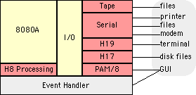

|
Heath8080A — Product Design : System Architecture |
Page last updated |
|
26-October-2002 |
|
|
On this page
• instructions Related links
• time |
System Architecture The figure below shows a high-level view of how the emulator is organized. The emulator is actually a system of device emulators, tightly integrated into one package. It's emulating an 8080A microprocessor, the I/O hardware and interrupt handlers wrapped around that processor, a visual front panel, a full-featured editing terminal, a floppy disk system and printer.
You can click a link to the far left or a section of the figure to explore each of these topics in more detail. This page provides a higher-level orientation to the H8 emulation system. There are actually three major control flows in operation within the emulator. Understanding these control flows will help you understand how the pieces fit together and why it works as it does. All three flows originate at the scheduling loop in the event handler. They are:
Each of these flows is described in more detail below. Instruction Flow On each pass through the scheduling loop, the event handler calls H8 Processing to dispatch one instruction. H8 Processing checks for pending interrupts and develops an interrupt vector if one is found. It then calls 8080A Emulation to execute the next instruction (or first instruction of the interrupt service routine). If the instruction is an IN or OUT, the I/O Package is called to classify the port address and dispatch processing to a device-specific handler:
I/O, if called, returns to the 8080A emulator. The 8080A emulator returns the processor state — RUN and interrupt enabled status — to H8 Processing, which, if necessary, updates the front panel status lamps with calls to the PAM/8 GUI drawing package. H8 Processing returns to the scheduling loop. The scheduling loop maintains an instruction "pacing" count which is updated with the number of machine cycles that would have been consumed by a real 8080A to execute the last instruction. This pacing mechanism helps to provide accurate emulation speed when set to a 2 mhz clock rate. We stay in the scheduling loop until the "done" flag is set using the File -> Quit item or via a high-level message from the Finder. Time Distribution Before starting the scheduling loop, we schedule a 1ms system timer which provides a stable source of timing to the emulator. At the top of the scheduling loop, we check to see whether this timer has expired, or whether the pacing count has been exhausted (ref. Instruction Flow above). If not, we go on to call H8 Processing as described above. If the timer or pacing count has expired, we do time-dependent processing. This part of the scheduling loop is described in detail in Time. But in general:
At the end of this portion of the loop, we wait until the timer has expired (if it has not already expired), then reset the timer and dispatch another instruction. The amount of time spent in this part of the loop is highly variable. It's generally quite short — around 22 microseconds on average when running on the author's G3 — but can extend to near "infinity" (in microprocessor terms) depending on what the user might be up to the next time we poll the Mac event queue. For example, the emulator gets no time while the user is browsing the menu tree, or while a dialog box is open. These variable moments of time when the 1ms timer is not running are not a part of the H8 time "universe." Everything freezes inside the H8 — time comes to a standstill, if you will. The disks don't spin, instructions don't process, and the whole thing sits in stasis until we complete all time-related processing. For this reason, the H8's clock may appear, from the viewpoint of an external observer, to run a little slow. Macintosh Events The Macintosh function WaitNextEvent is called once every 25ms when we are the foreground application and once every 10ms when we're in the background. On each call, we will accept one event, if present, and process it. We'll then return to the scheduling loop so it can complete time-based processing and get back to running the 8080A. Amid the suspend and activate events, window dragging, mouse-down's in the menu system, etc., events will occur that will drive data through the emulator:
In all cases, the event handler eventually returns to the time-distribution section of the scheduling loop, and instruction processing continues. |